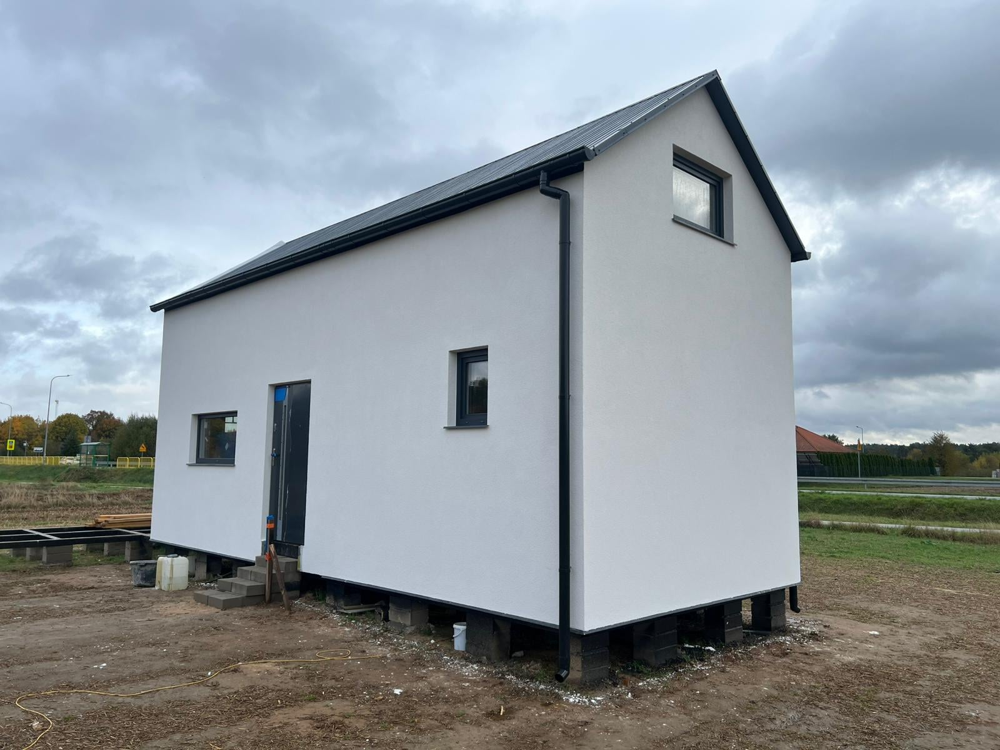
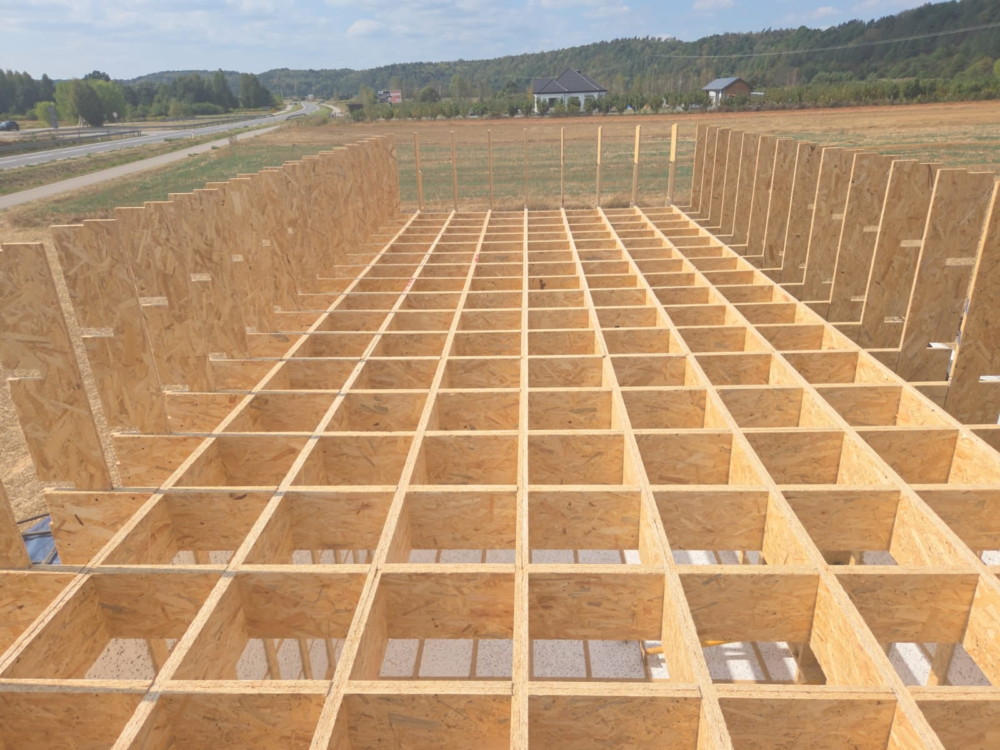
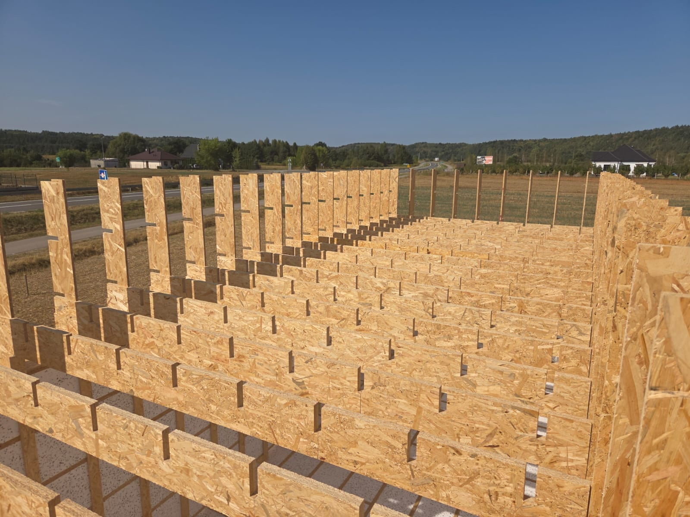
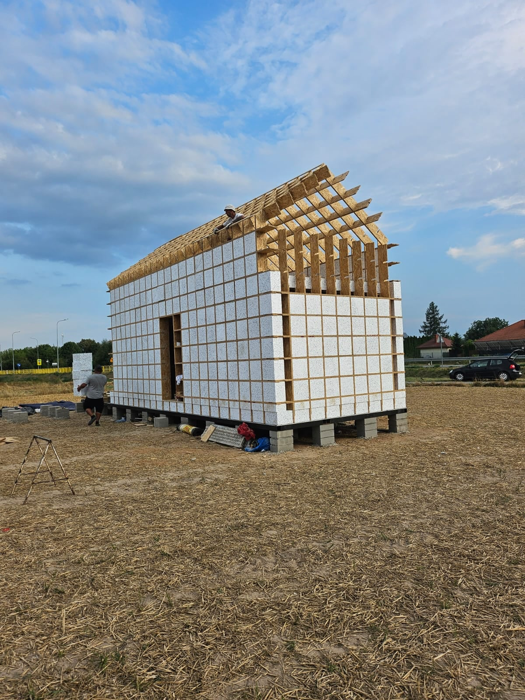
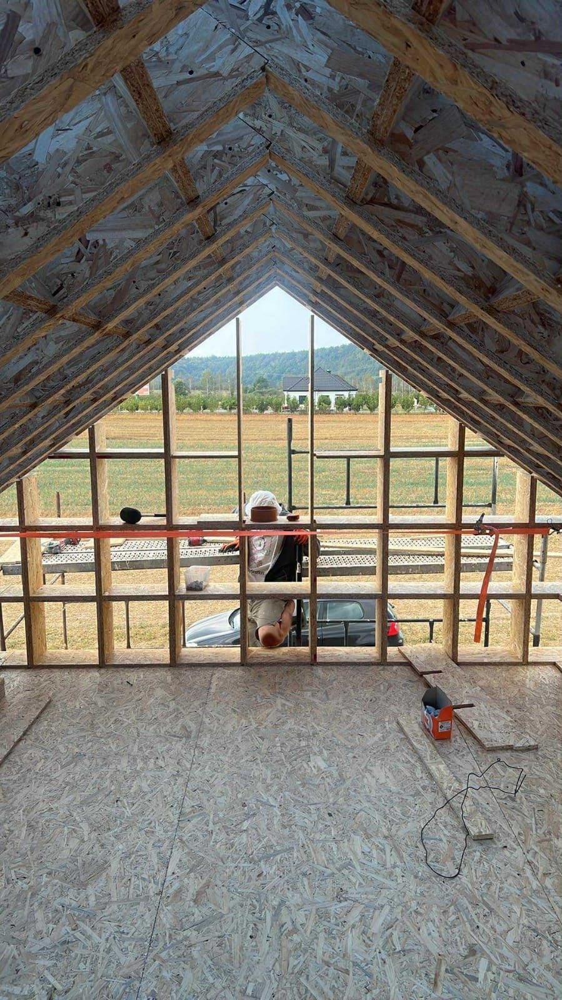
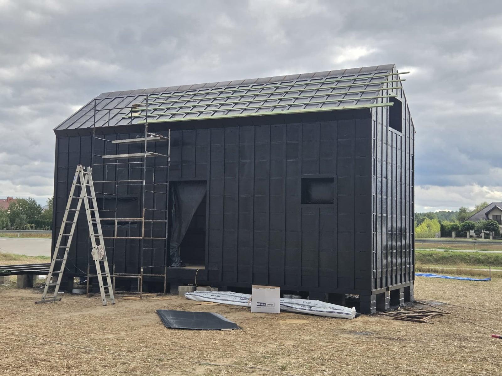

Rzeczywista budowa Combstruct
Od pierwszej deski do własnego domu.
Zajrzyj na budowę Combstruct. Te zdjęcia pokazują rzeczywisty montaż: konstrukcję z OSB, wypełnienie izolacją, dach i wykończoną elewację.


Siatka, od której zaczyna się dom.
Krzyżujące się żebra tworzą komory podłogi. Pionowe elementy wyznaczają ściany.

Izolacja trafia w komory.
Dopasowane bloki izolacji wypełniają przestrzeń pomiędzy żebrami ściany.

Ta sama zasada na kolejnym poziomie.
Montaż żeber stropu i połączeń z pionowymi elementami ścian.

Konstrukcja zamyka bryłę.
Żebra połaci i ścian tworzą konstrukcję dachu dwuspadowego.

Przestrzeń pod dachem.
Widok od środka: konstrukcja połaci, szczytu i poszycie stropu.

Przygotowanie do wykończenia.
Warstwy osłonowe na ścianach i dachu oraz ruszt pod kolejne warstwy.
Teraz porozmawiajmy o Twoim domu.
Masz działkę, rzut albo pierwsze pytania? Zacznijmy od rozmowy.